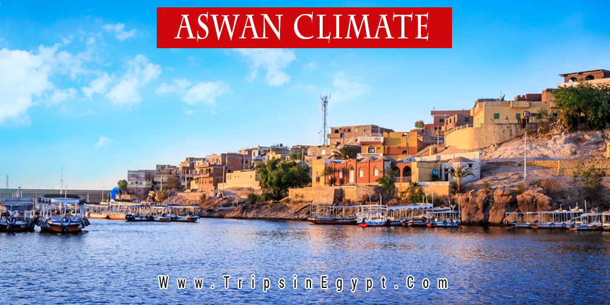

It is the ancient city of “Swenett”, a name that derived from an ancient goddess, who was identified later as Eileithyia by the Greeks. Swenett was the southernmost town in Egypt, it was also important as a military station as under every dynasty, it was a garrison town. its location was an object of great interest to the Ancient geographers.
It was so important as it controlled all communications of the Nile, the tombs in Aswan play also great importance as they represent the old and middle kingdoms that are opened for visitors today so that they have an insight into the greatness of the Ancient civilization. There were fields of Syenite granite, quarried for the wealth of shrines and monuments around the country, including many pyramids, which makes it a unique touristic place.
Aswan's climate

Aswan has a hot desert climate like the rest of Egypt. Aswan and Luxor have the hottest summer days of any city in Egypt. Aswan is one of the hottest, sunniest and driest cities in the world. Average high temperatures are consistently above 40 °C (104.0 °F) during summer (June, July, August and also September) while average low temperatures remain above 25 °C (77.0 °F). Average high temperatures remain above 23 °C (73.4 °F) during the coldest month of the year while average low temperatures remain above 8 °C (46.4 °F). Summers are very prolonged and extremely hot with blazing sunshine although desert heat is dry. Winters are brief and pleasantly mild, though nights may be cool at times.
The climate of Aswan is extremely dry year-round, with less than 1 mm (0.04 in) of average annual precipitation. The desert city is one of the driest ones in the world, and rainfall doesn't occur every year, as of early 2001, the last rain there was seven years earlier. When heavy precipitation does occur, as in a November 2021 rain and hail storm, flash flooding can drive scorpions from their lairs to deadly effects.[33] Aswan is one of the least humid cities on the planet, with an average relative humidity of only 26%, with a maximum mean of 42% during winter and a minimum mean of 16% during summer.
The weather of Aswan is extremely clear, bright and sunny year-round, in all seasons, with a low seasonal variation, with almost 4,000 hours of annual sunshine, very close to the maximum theoretical sunshine duration. Aswan is one of the sunniest places on Earth.
The highest record temperature was 51 °C (124 °F) on July 4, 1918, and the lowest record temperature was −2.4 °C (27.7 °F) on January 6, 1989.